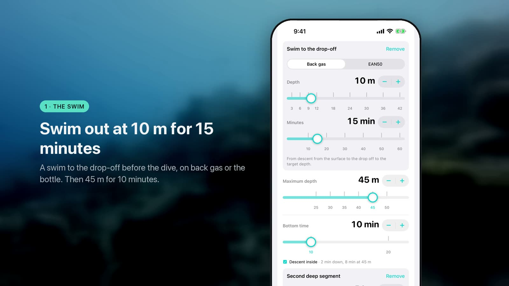
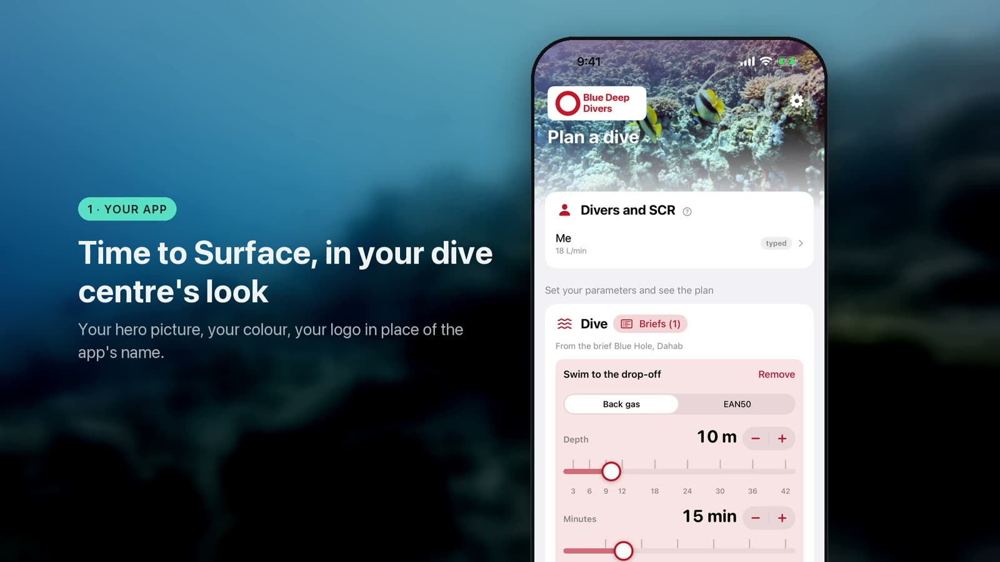
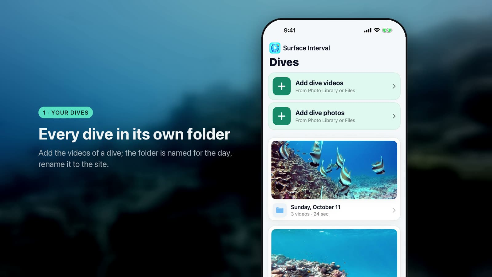
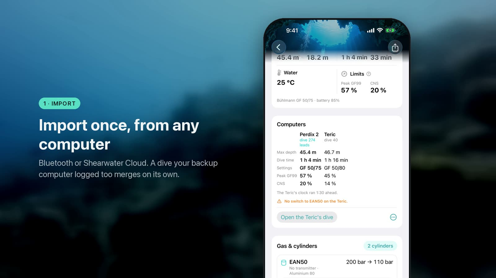

Apps for divers, today and every day.
Gas planning, decompression, weighting, your Shearwater's log and your dive videos, on iPhone and Mac. Built by a diver. No accounts, no ads, no tracking. Enter it once: every app knows it, through your own iCloud.


Time to Surface
Trimix deco and technical dive planner

Time to Surface for dive pros
Signed team dive plans, in your dive centre’s brand*
Plan the dive, send it for signatures, and hand the dive centre one page the whole team has signed: the schedule, the gases, the gas plan and each diver’s signature, as a picture or a one-page A4 PDF. Every plan by its date, with search across sites and teams. Your logo, your pictures and your colour on the app and on every page it sends, with the Diver.Today App Family subscription: a week free, then monthly, yearly or once for life, one subscription for every Diver.Today app. The planner and briefs stay free.


Surface Interval
Underwater video colour correction & reels
Fix blue GoPro dive footage and turn it into one reel — add a dive's videos and the app does the rest: colour restored, the best moments trimmed and put in order, music under them. The same app on iPhone and on Mac, with the same folders and reels. Free for two reels a day.


Dive log
Shearwater dive log app for iPhone
Import your Shearwater dives once, over Bluetooth or from Shearwater Cloud, into a dive logbook: each dive on one page, super fast navigation, a backup computer’s copy merged on its own, tags and buddies you can search, your SAC per dive and over time, every site on one map, and a card for social media. Your name, your picture and your colour on the app and on the card*. Free, private, no account.
In App Review. The link works the day Apple approves it. Personalisation, the Weights Check link and the Shearwater Cloud import follow in the first update.


Turn Pressure
Dive planner and minimum gas calculator
Recreational scuba gas planner and no-deco calculator: turn pressure, minimum gas and bottom time for the dive you're actually doing — not a flat 50 bar. Your own SAC rate, repeat dives, a dive log. Your divers and your saved briefs in your own iCloud, shared with Time to Surface*. Free, offline, no account.


Weights Check
Scuba weight and buoyancy calculator
Dive weighting for your rig, your lead, your water — a library instead of memory. The balance drawn at depth, estimates until you record a weight check, then your own numbers. Your rigs, gear and checks in your own iCloud; the dives you link in Dive log listed on each rig’s page*. Free, offline, no account.
One iCloud, five apps
All your data is in your own iCloud: on every device you sign in to, and in every Diver.Today app. Enter it once.
- Divers and briefs. The divers you add in Turn Pressure, with their breathing rates, and the briefs you save are there in Time to Surface, and the other way round.*
- Rigs and dives. The rig you built in Weights Check is picked in Dive log; the dives you link are listed on the rig’s page.*
- Buddies and dive sites. Named once in Time to Surface, there in every app.*
- Your look, one subscription. The Diver.Today App Family is launching now: your name, logo, pictures and colour on every app and on everything it exports, set once and carried to the others through iCloud. One subscription for all five apps; Time to Surface first, Dive log next.*
* New feature availability comes late October 2026, with ongoing Apple review.